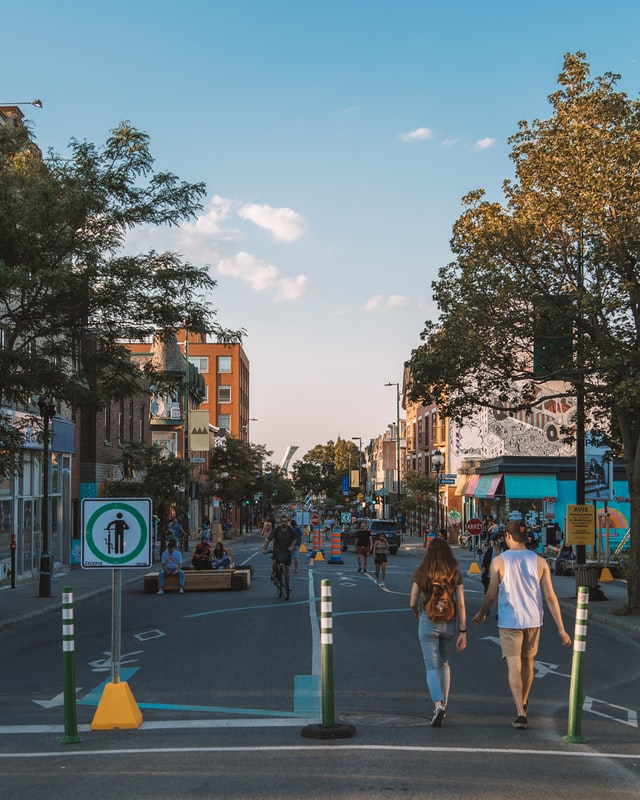

The Plateau-Mont-Royal takes its name from its location on relatively flat terrain north of Sherbrooke Street and downtown, and east of Mont-Royal. It is the most densely populated borough in Canada, with 101,054 people living in an 8.1 square kilometre area.

The downtown region houses many corporate headquarters as well a large majority of the city's skyscrapers — which, by law, cannot be greater in height than Mount Royal in order to preserve the aesthetic predominance and intimidation factor of the mountain.

The Old Port of Montreal is the historic port of Montreal, Quebec, Canada. Located in Old Montreal, it stretches for over 2 km along the Saint Lawrence River. It was used as early as 1611, when French fur traders used it as a trading post.